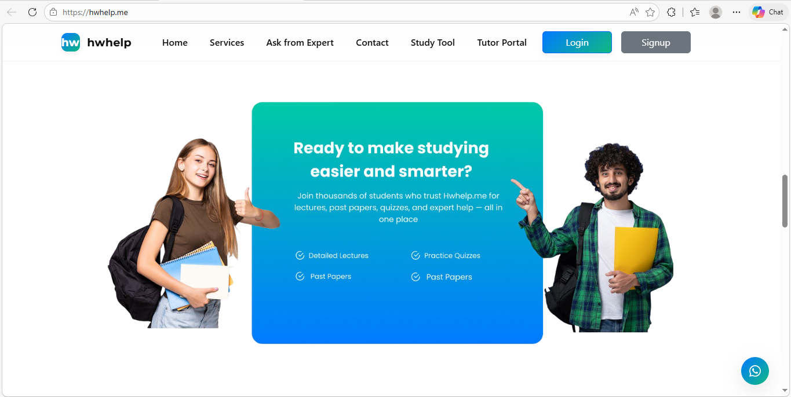
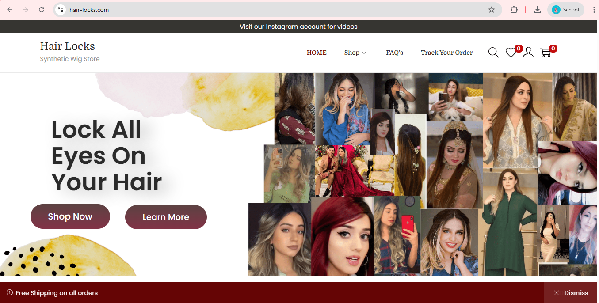
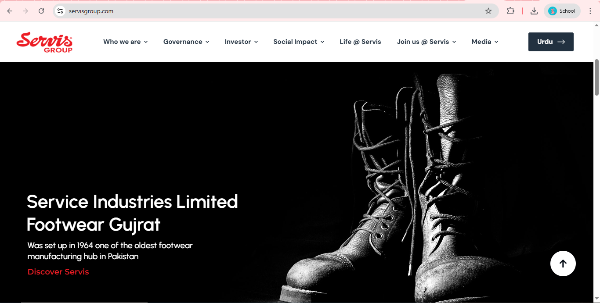

Frontend Development · UX Design · Generative AI
📍 Pakistan
I am a Software Engineer with a strong foundation in both frontend development and UI/UX design. My work sits at the intersection of engineering and experience design translating user needs into clean, functional, and visually compelling interfaces.
With hands-on experience across production websites, internships, and academic research projects involving Generative AI and NLP, I bring a thoughtful, user-centered approach to every problem I work on.
Led the complete frontend redevelopment of the company website using PHP-based architecture and JavaScript,
significantly enhancing usability and visual consistency.
Collaborated closely with backend systems to integrate dynamic content and improve overall website
functionality. Delivered responsive, scalable UI solutions with a strong focus on performance,
accessibility, and long-term maintainability.

Live ViewOwned the end-to-end web design lifecycle for a live production website serving real users. Designed high-impact landing pages aligned with brand identity and modern UX best practices. Optimized the UI for performance, accessibility, and usability across all major devices and browsers.

Live ViewParticipated in debugging and testing website features to ensure cross-browser compatibility and responsive behavior. Assisted in optimizing web performance by identifying load-time bottlenecks and applying frontend best practices. Gained practical exposure to network configuration, IP management, and system diagnostics under IT mentorship.

Live ViewAn AI-driven multi-agent SDLC automation platform that automates the software development lifecycle from requirements gathering to system design using Generative AI and NLP. Built as a cross-platform desktop application with cloud integration for secure, traceable project artifact management.
A sentiment analysis system using a fine-tuned RoBERTa transformer model to classify sentiments positive, negative, and neutral across multiple aspects within a single sentence, with intuitive dashboards designed to present AI outputs clearly to non-technical users.
Secured a position in the UI/UX Design Competition at FAST University, demonstrating strong design thinking, usability principles, and the ability to deliver user-centered solutions under competitive conditions.
Participated in multiple speed programming competitions, sharpening logical problem-solving and the ability to write efficient, optimized code under strict time constraints.
Relevant Coursework: UX Engineering, Human-Computer Interaction, Data Structures, Database Systems, Software Engineering, Web Engineering, Artificial Intelligence, Operating Systems, Software Quality Engineering, Software Design & Engineering, Object-Oriented Programming.
I am open to full-time roles, internships, freelance projects, and meaningful collaborations. Feel free to reach out through any of the channels below.
Muskan Tariq · Software Engineer & UI/UX Designer · Pakistan · 2025